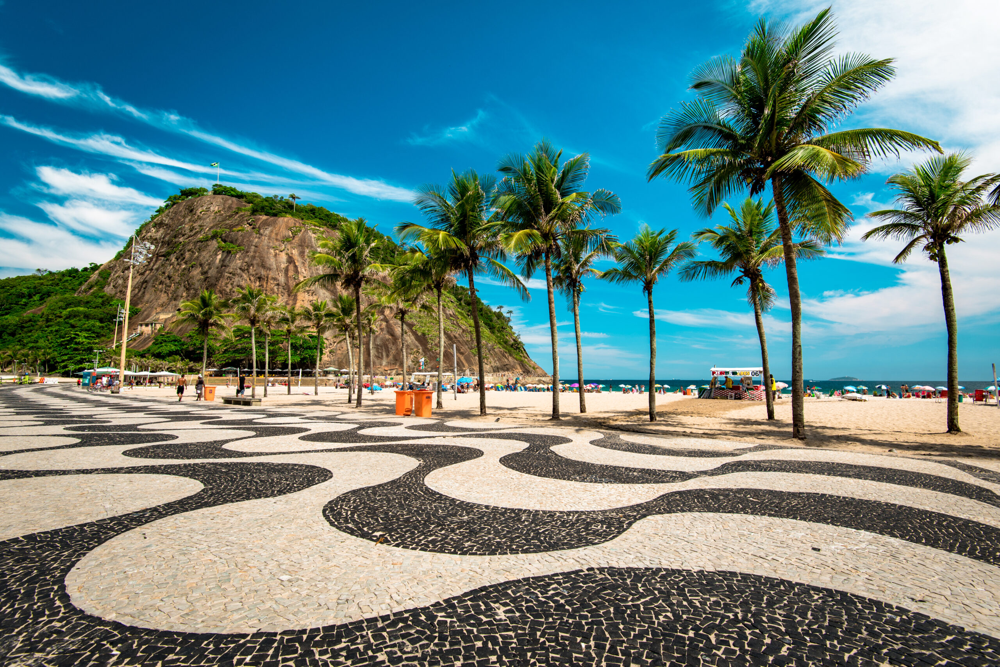

Guia turistico Rio de janeiro
O Rio de Janeiro é um dos destinos turísticos mais famosos do Brasil e do mundo. Conhecido por suas belas praias, paisagens naturais e pontos turísticos icônicos, o Rio encanta visitantes com sua cultura vibrante e clima acolhedor.

O Cristo Redentor é um dos monumentos mais famosos do mundo e um dos maiores símbolos do Brasil. Localizado no topo do Morro do Corcovado, no Rio de Janeiro, ele oferece uma vista incrível da cidade, incluindo praias, montanhas e a Baía de Guanabara. Inaugurado em 1931, o Cristo Redentor possui aproximadamente 30 metros de altura, além de um pedestal de cerca de 8 metros. A estátua representa Jesus Cristo de braços abertos, simbolizando paz, acolhimento e proteção. Além de sua importância religiosa, o monumento é também um dos principais pontos turísticos do país, recebendo milhões de visitantes todos os anos. Em 2007, foi eleito uma das Sete Maravilhas do Mundo Moderno, reforçando ainda mais sua relevância cultural e histórica.
